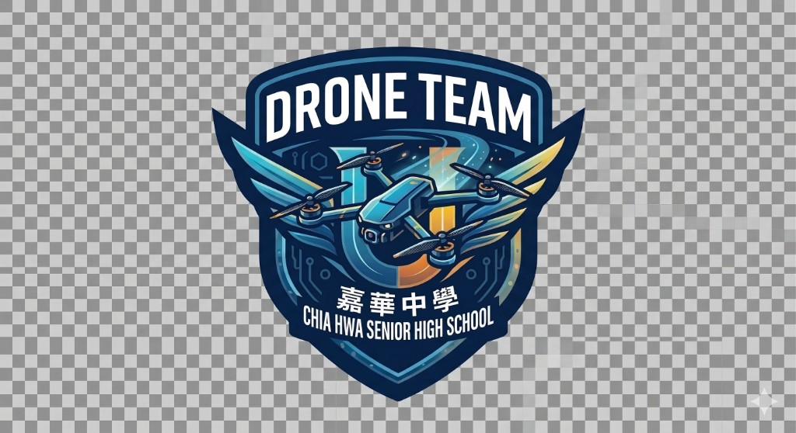

← 返回上一頁
總覽
馬達
電池
螺旋槳
組裝
續航
飛控硬體
飛控設定
設定模擬
LED
規則
可進出各章；瀏覽器 ← 也可返回

Betaflight
App 模擬器
模擬已連線 · CHSH-ATK-1
攻擊手建議值
防守手建議值
Expert Mode
Reset to Defaults
回手冊說明
這是依
Betaflight 官方 CLI 文件
展開的完整設定模擬。每一項
主說明都是繁體中文
；英文原文預設收合。若你還看到整排英文，請按 Ctrl+Shift+R 強制重新整理。外觀對齊 Configurator，但
不會寫入飛控
。目前載入
…
點左側分頁開始。上方可套用攻擊／防守建議值；開啟 Expert Mode 會顯示 GPS／OSD／VTX／Servos 等進階分頁。